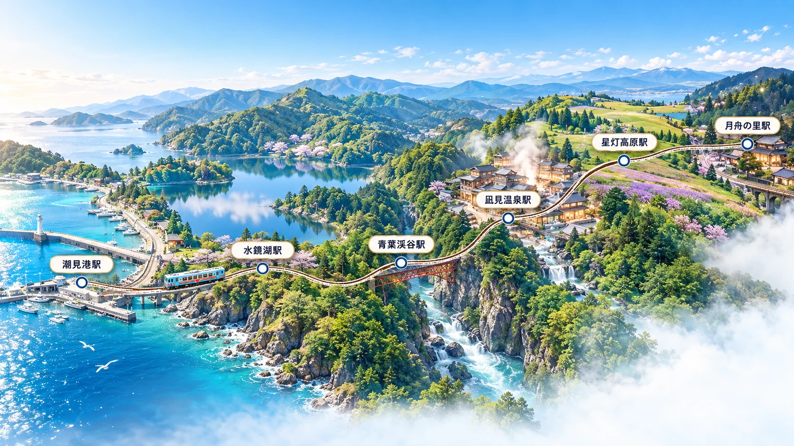
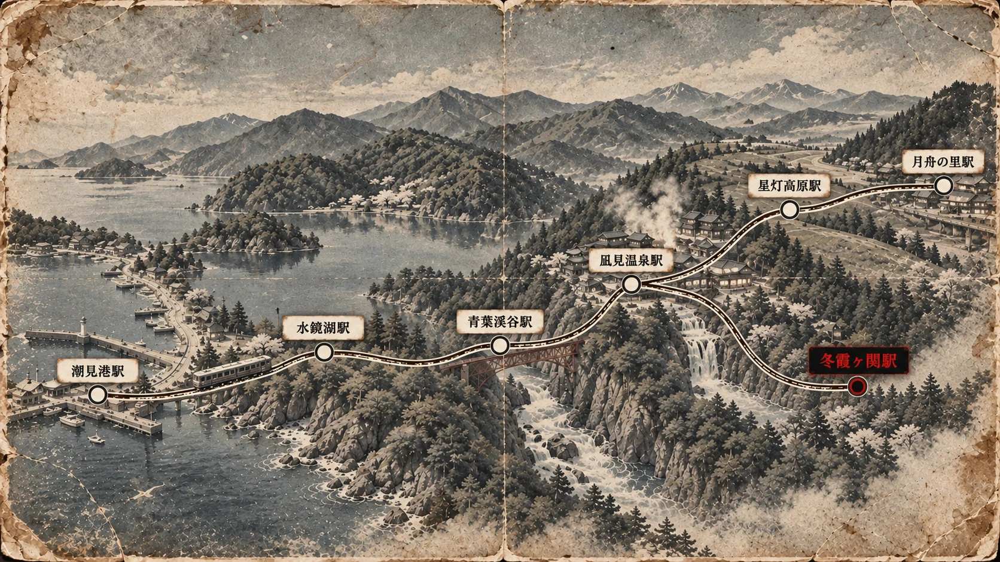

JOURNEY
山あいを抜け、水辺と渓谷を巡る。車窓の移ろいを楽しむ旅路です。
ROUTE MAP
自然の表情が次々と移り変わる、凪燈ものがたりの旅をご案内します。
現在の運行ルートを表示しています


HIGHLIGHTS
SCENE 01
緑豊かな山並みの間を、列車はゆっくりと進みます。
SCENE 02
水面に映る空と季節の色を、大きな窓から望みます。
SCENE 03
橋梁を渡るひとときには、奥行きある渓谷美が広がります。